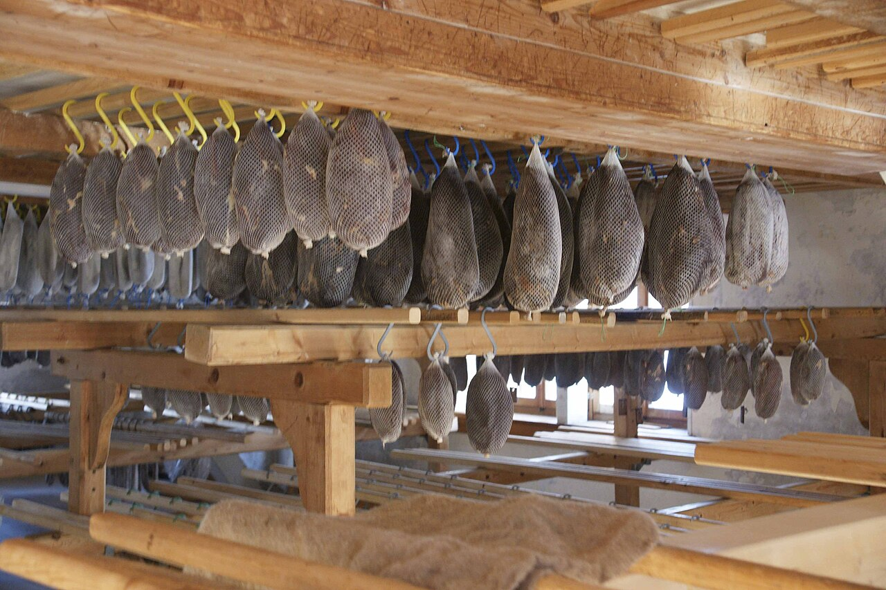
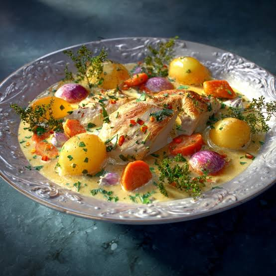
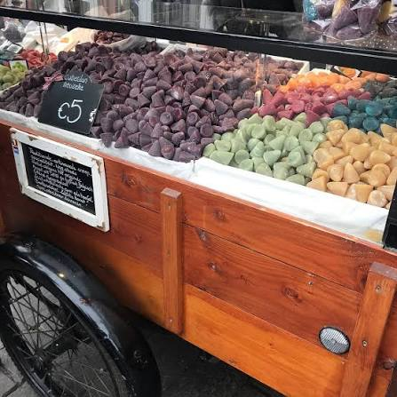
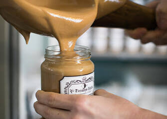

CityLoop Quest Gand


Le waterzooi est probablement le plat gantois le plus célèbre, mais il a changé au fil du temps. À l’origine, cette préparation mijotée utilisait les poissons de rivière disponibles dans la Lys et l’Escaut. Lorsque la pollution et l’évolution des goûts raréfièrent cet usage, le poulet devint la version dominante. Le bouillon est enrichi de légumes, de crème et souvent de jaune d’œuf. Un bon waterzooi reste délicat : il doit être onctueux sans devenir une sauce lourde et conserver la saveur du produit principal.

La carbonnade flamande, appelée stoofvlees, appartient au registre plus robuste. Des morceaux de bœuf cuisent lentement dans la bière avec oignons, moutarde et pain d’épices ou tartine. Chaque maison possède sa variante, plus douce, plus amère ou plus épicée. À Gand, elle accompagne naturellement les frites, dont la double cuisson produit un extérieur croustillant et un cœur moelleux. Le choix de la bière influence fortement le résultat, mais la recette n’exige pas nécessairement la plus forte.
Les cuberdons attirent le regard par leur forme de petit nez conique et leur couleur violette. Leur coque légèrement dure enferme un cœur sirupeux parfumé traditionnellement à la framboise. La confiserie est associée à Gand depuis le XIXe siècle, même si son origine exacte alimente les récits concurrents. Elle supporte mal le temps : le sucre cristallise progressivement à l’intérieur, ce qui explique pourquoi les artisans insistent sur la fraîcheur et pourquoi les véritables cuberdons étaient longtemps difficiles à exporter.

Autre douceur locale, le mastel est un petit pain rond parfumé à la cannelle, avec un creux central. Pendant les Gentse Feesten, certains cafés préparent le gestreken mastel : le pain est beurré, sucré puis pressé entre des feuilles de papier avec un fer chaud, jusqu’à devenir plat et caramélisé. Cette préparation simple possède le charme des recettes de fête que l’on mange debout. Les mokken et autres biscuits régionaux complètent un patrimoine moins connu que les chocolats belges.
La moutarde de Gand, très vive, accompagne fromages, charcuteries et plats mijotés. La maison Tierenteyn-Verlent perpétue une production emblématique près du Groentenmarkt ; sa moutarde fraîche est vendue dans des pots que les habitués font remplir. Les bières locales et régionales, notamment celles de petites brasseries urbaines, prolongent le repas. Pour goûter intelligemment, mieux vaut choisir deux ou trois spécialités dans des lieux différents plutôt que commander un menu qui prétend tout résumer en une seule assiette.

La tradition brassicole accompagne naturellement ces plats. Gand a connu de nombreuses brasseries, disparues ou absorbées au fil des concentrations industrielles, mais la culture de la bière reste inventive. Blondes, brunes, bières acides ou fortement houblonnées se dégustent avec attention plutôt que comme simple défi de quantité. Certains cafés servent dans un verre propre à chaque référence et expliquent volontiers la différence entre fermentation haute, garde en bouteille et vieillissement en fût. Une eau plate entre deux dégustations est un geste de gourmet, pas un manque d’enthousiasme.
La ville cultive enfin un rapport très contemporain à l’alimentation végétale. Le « jeudi végétarien », lancé dans les années 2000, a encouragé écoles, restaurants et habitants à réduire régulièrement la viande sans transformer le repas en sermon. Cette dynamique a favorisé une offre particulièrement variée de cuisines végétariennes et véganes. Elle dialogue avec des recettes plus anciennes à base de légumes, légumineuses, pain et fromage. Gand montre ainsi qu’une gastronomie locale n’est pas un catalogue figé : elle peut protéger le waterzooi et la moutarde tout en inventant de nouvelles habitudes. Les brasseries artisanales, les boulangeries au levain et les jeunes chefs complètent aujourd’hui ce paysage gourmand. Ils reprennent volontiers un ingrédient régional, puis le déplacent dans une assiette contemporaine. Cette liberté évite au patrimoine culinaire de devenir un décor réservé aux cartes postales.